Big Orange Crayonmusical thingsthe Orange, Trouser, the Users, and Dryer at Valentine's May 27, 2000 There are pictures at the bottom! This was an awesome show. I've been wanting to see Dryer for a long time, but I never got a chance to before. Everything about this show was just great - I didn't run into any jerks - the people were great, the bands were amazing, I bought a Dryer 7" and my car wasn't stolen! The Orange was the first band on, opting to play first instead of Trouser because it gave them 15 extra minutes to play. As always, they were great. I've seen them so many times that I've run out of things to say about them except that if you ever pass up an opportunity to see them I'll hate you forever. Not really, I'll just hate you for a few years. Trouser was the second band to play. I heard a rumor that this was going to be their last show - it's really annoying how quickly local bands break up. Oh well, I'm sure they'll reform in a few weeks with a different name. They played fun, pixies-influenced pop-punk as the kids are wont to do, and it was just as enjoyable as ever. ` The Users were the first band to play that I hadn't seen before. I liked them, but I'm not sure of anything about them in terms of where they come from or how long they've been around. They played entertaining power pop, and the three guys playing guitars kept switching singing duties and what instrument they played. There were two guitars and one bass and each of them took a turn playing each, which was kind of neat. The guy who started off playing bass had a cigarette in his mouth most of the time, which looked kind of silly. And then Dryer came on! I'm really kicking myself for not seeing them sooner. They play what I guess could be called rock-ish indie pop, or poppy punk or whatever. They kick ass. Even though it was my first time seeing them I jumped around merrily and had a great time. All three of them sang for at least one song, and I loved each one. Dryer rocks. The last band to play was Small Axe. Matt and I were going to stick around to see them, but they looked kind of metal and all had facial hair and there was a guy big, muscular, bald guy walking around with one of their t-shirts on, so we got scared. I don't use my flash at shows, so I make my camera take extra long exposures, which is why all of these pictures look freaky. Some of them are very good arguments against jumping around when the shutter is open... 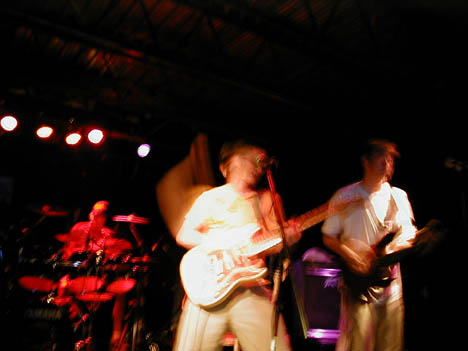 Ben takes a mighty strike at his guitar 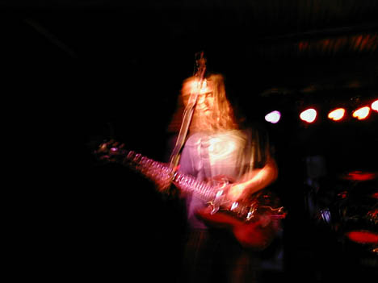 Kind of dreamy looking picture of Frank 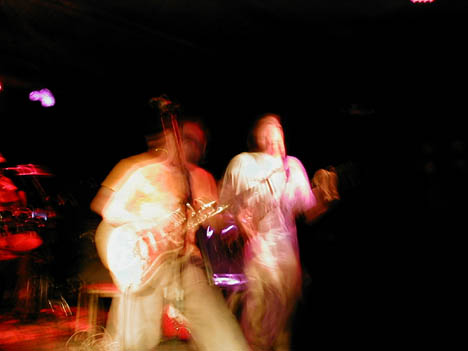 John and Ben jump around 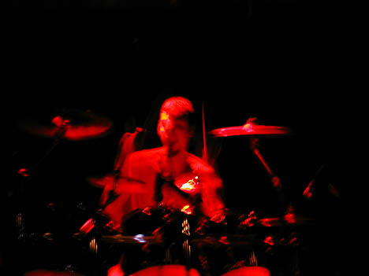 Dan looks badass because of the red lights Trouser pictures: 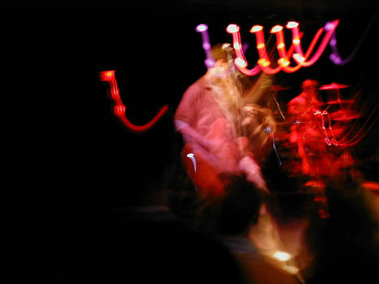 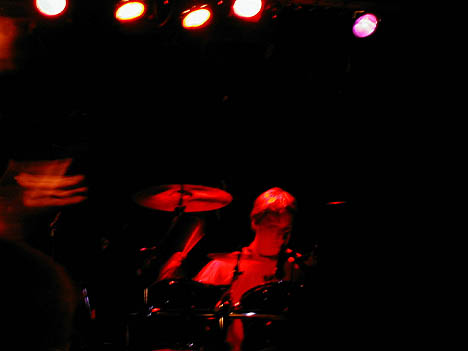 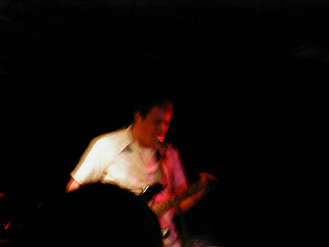 the Users pictures: 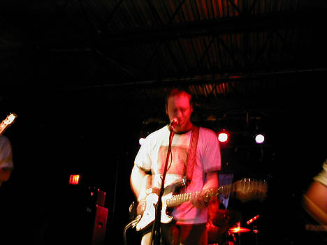 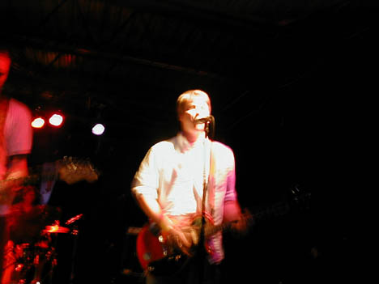 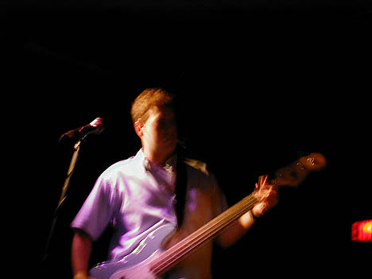 Dryer pictures: 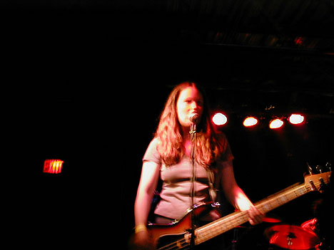 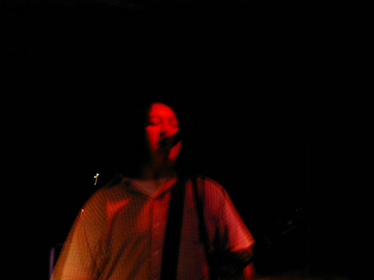 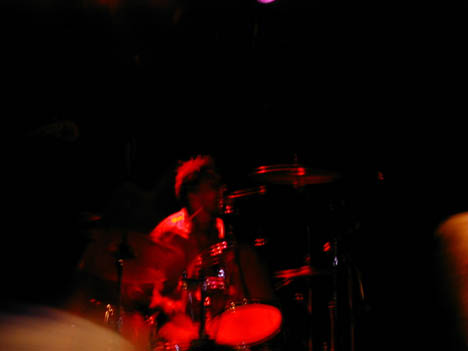 |